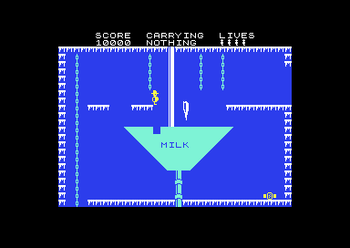
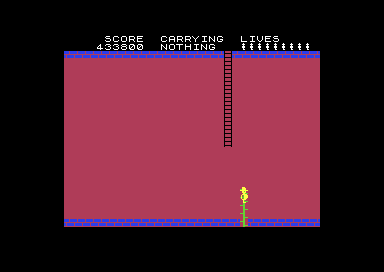
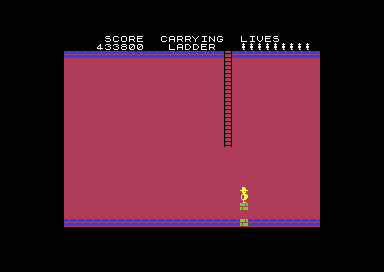
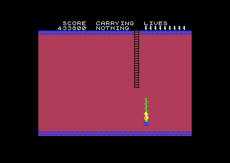
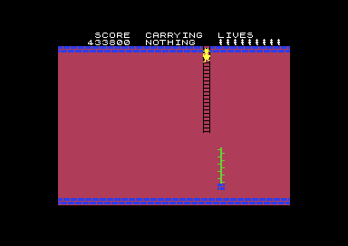
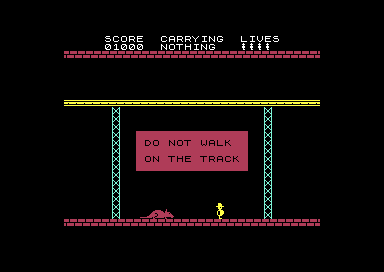
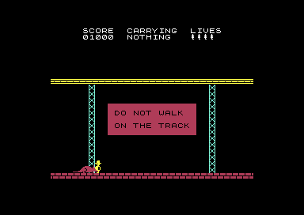

<meta charset="utf-8">
<meta name="viewport" content="width=device-width, initial-scale=1">
<title>{{title}}</title>
<link rel="preconnect" href="https://fonts.googleapis.com">
<link rel="stylesheet" href="https://fonts.googleapis.com/css2?family=Lato:wght@400;700;900&family=IBM+Plex+Mono:wght@400;500&display=swap">
<style>
:root{
  --bg:#23262d; --paper:#e9e7e1; --surface:#ffffff; --surface-2:#f1efea; --line:#d5d3cc; --line-soft:#e0ded8;
  --ink:#2f3136; --ink-soft:#55585f; --ink-mute:#80838a;
  --link:#1f5fa8; --link-hover:#154480; --accent:#1f5fa8;
  --amber:#c25a00; --cyan:#1f5fa8; --coral:#d04a3a; --green:#2a8a4a; --violet:#4a5bd6; --hl:#fff0c2;
  --chip:#2f3136; --chip-ink:#ffffff;
  --c64blue:#40318d; --c64grey:#686868;
  --fd:'Lato',system-ui,sans-serif; --fb:'Lato',system-ui,sans-serif; --fm:'IBM Plex Mono',ui-monospace,Menlo,monospace;
  --col:1080px; --gx:68px; --fs:17px; --lh:1.6; --hw:900; --h1:46px; --h2:26px; --sy:48px; --pp:26px; --r:10px;
  --plate-shadow:0 1px 2px rgba(0,0,0,.05),0 4px 14px rgba(0,0,0,.05);
}
*{box-sizing:border-box}
html{background:var(--bg);min-height:100%}
body{background:var(--paper);color:var(--ink);font-family:var(--fb);font-size:var(--fs);line-height:var(--lh);max-width:var(--col);margin:0 auto;min-height:100vh;padding:0 0 4rem}
h1,h2,h3{font-weight:var(--hw);letter-spacing:-.01em;text-wrap:balance;color:var(--ink);margin:0}
.wrap{padding:0 var(--gx)}
.hero{padding:48px var(--gx) 8px;text-align:left}
.eyebrow{font-family:var(--fm);font-size:12px;letter-spacing:.08em;text-transform:uppercase;color:var(--ink-mute);margin:0 0 10px}
.hero h1{font-size:var(--h1);line-height:1.15;letter-spacing:-.02em;margin:0 0 14px}
.hero .sub{margin:0 0 .6em;color:var(--ink-soft)}
section{padding:var(--sy) 0 24px}
section:last-of-type{border-bottom:none}
.fig{font-family:var(--fm);font-size:12px;letter-spacing:.08em;text-transform:uppercase;color:var(--ink-mute);margin:0 0 10px}
h2.t{font-size:var(--h2);margin-bottom:12px}
.lede{color:var(--ink-soft);margin:0 0 30px}
.plate{background:var(--surface);border:1px solid var(--line);border-radius:var(--r);padding:var(--pp);box-shadow:var(--plate-shadow)}
.cap{font-size:14px;color:var(--ink-mute);margin-top:14px;line-height:1.55}
.cap b{color:var(--ink);font-weight:700}
code{font-family:var(--fm);font-size:.82em;background:var(--chip);color:var(--chip-ink);border-radius:4px;padding:2px 6px;overflow-wrap:break-word;-webkit-box-decoration-break:clone;box-decoration-break:clone}

.mapgrid{display:grid;grid-template-columns:repeat(10,1fr);gap:3px;background:#111;padding:3px;border-radius:6px}
.mapgrid canvas{width:100%;height:auto;cursor:pointer;display:block}
.mapgrid canvas.on{outline:3px solid var(--amber)}
.ctl{display:flex;flex-wrap:wrap;gap:12px;align-items:center;margin:12px 0;font-size:14px}

.legend{display:flex;flex-wrap:wrap;gap:10px;font-size:13px;color:var(--ink-soft);margin-top:8px}
.legend i{display:inline-block;width:12px;height:12px;border-radius:2px;margin-right:4px;vertical-align:-1px}
table.t{border-collapse:collapse;font-size:15px;margin:10px 0}
table.t td,table.t th{border-bottom:1px solid var(--line-soft);padding:4px 10px;text-align:left}
.ce2-src{font-family:var(--fm);font-size:13px;background:#1b1d22;color:#e9e7e1;padding:14px;border-radius:8px;white-space:pre-wrap;overflow-wrap:anywhere}
.ce2-src b{color:#edf171;font-weight:500}
.twocol{display:grid;grid-template-columns:1fr 1fr;gap:14px}@media(max-width:700px){.twocol{grid-template-columns:1fr}}
</style>
<!-- tabs -->
<header class="hero">
  <p class="eyebrow">{{year}} · {{publisher}}</p>
  <h1>Discoveries</h1>
  <p class="sub">The authors' own source code left in memory, a joystick port the instructions get wrong, vats that take the wrong ingredients, the bug that sinks the green ladder, the five bytes that break room 76 in other copies, and an unused title logo.</p>
</header>
<main class="wrap">

<section id="source">
  <p class="fig">01 · Left behind in memory</p>
  <h2 class="t">A page of the original source code</h2>
  <p class="lede">The 256 bytes at <code>$8F00</code>, just before the room records, are not game data. They hold a piece of the program the authors typed, in BBC BASIC, with the assembly language written inside it.</p>
  <div class="twocol">
    <div><p class="fig">The bytes at $8F00, decoded</p><div class="ce2-src" id="ce2-src">Loading…</div></div>
    <div><p class="fig">The code at $7755 that it built</p><div class="ce2-src" id="ce2-asm">Loading…</div></div>
  </div>
  <p class="cap">The first box: each line of the BBC BASIC program as the bytes store it, line number first. Byte <code>$80</code> is BASIC's short form of AND, a backslash starts a comment, and lines 2430 and 2440 hold a single space each. The second box: the instructions at <code>$7755</code> to <code>$777F</code>, read from the listing. They match the source instruction for instruction, as far as the fragment goes.</p>
  <p>BBC BASIC lets a program contain assembly language, and many games of the time were written that way on a BBC Micro. These bytes are lines 2420 to 2470 of such a program. The first part of a line before them is there too, and the last line breaks off where the room records begin at <code>$9000</code>. Probably the source was still in memory when the game's code was assembled and copied, and this page of it travelled along.</p>
  <p>It gives the authors' own names for a few routines and variables. <code>setfull</code> shows a vat's "full" sign. <code>carb</code> and <code>setf</code> empty a basket into a vat, <code>spebas</code> handles the toy-part basket, <code>upscr</code> adds to the score and <code>tib1</code> redraws the pick-ups. <code>tcar</code> is the thing carried, and <code>lives</code> is the lives counter. The Source code tab uses these names. One comment, on line 2450, starts with byte <code>$86</code>. On a BBC Micro in teletext mode that byte turns the text after it cyan, so in a listing on the author's screen the comment would have shown in colour.</p>
</section>

<section id="port">
  <p class="fig">02 · The instructions</p>
  <h2 class="t">The joystick goes in port 2</h2>
  <p>The instructions say: "YOU MAY USE A JOYSTICK (USE IN CONTROL PORT 1)". The routine at <code>$8750</code> reads <code>$DC00</code>, which is control port 2.</p>
  <p>A joystick in port 1 does worse than nothing. The C64's keyboard shares its wires with port 1, so the stick presses keys. Pushing it right presses F7, which is the save key, and the game stops to ask for a tape. Pressing fire presses F1, the abort key, and the game goes back to the title screen.</p>
  <p>The instructions also say a game can be saved "AT ANY TIME, PROVIDED YOU ARE ON A PLATFORM, LADDER OR CHAIN". The main loop allows the save key only when Harry is walking on a platform or is on a ladder (<code>$4A87</code>). On a chain the key does nothing.</p>
</section>

<section id="vats">
  <p class="fig">03 · A loose check</p>
  <h2 class="t">Vats take the ingredients before their own</h2>
  <p>Each thing Harry can carry has a number, and the numbers come in blocks of eight: toy parts 0 to 7, milk 8 to 15, cocoa 16 to 23 and sugar 24 to 31. When Harry drops something over a vat, the check at <code>$746B</code> asks only whether the number is below the end of the vat's own block:</p>
  <table class="t"><tr><th>Vat</th><th>Takes numbers below</th><th>So it also takes</th></tr>
  <tr><td>toy maker (room 95)</td><td>8</td><td>only toy parts</td></tr>
  <tr><td>milk (room 33)</td><td>16</td><td>toy parts</td></tr>
  <tr><td>cocoa (room 51)</td><td>24</td><td>toy parts and milk</td></tr>
  <tr><td>sugar (room 110)</td><td>32</td><td>toy parts, milk and cocoa</td></tr></table>
  <p>Once the item has fallen in, the game takes 1 off the counter of the item's own kind (<code>$76FF</code>), not the vat's. So a bag of milk dropped into the sugar vat still counts as milk delivered.</p>
  <p>A toy part is different. The milk, cocoa and sugar vats all take toy parts, and the part falls in and disappears, but the routine that counts ingredients (<code>$76FF</code>) skips toy parts, so the toy maker's counter stays where it was. The part is gone for good: only two things ever bring a used part back, a new game and a delivered egg (<code>game_state_init</code>, <code>$49CA</code>), and the egg cannot be made without the toy. Losing a life gives back only the thing Harry is carrying. One toy part in the wrong vat leaves that egg unfinishable, and the player can only lose the remaining lives or abort.</p>
  <div class="plate"><p class="cap">Room 33 in VICE: Harry after dropping a toy part from the ledge into the milk vat. All four counters still read 8.</p></div>
</section>

<section id="colours">
  <p class="fig">04 · From another machine</p>
  <h2 class="t">Spectrum colours, three times over</h2>
  <p>The rooms, the pick-ups and the creatures all store their colours as ZX Spectrum colour numbers. The game turns them into C64 colours through the table 0, 6, 2, 4, 5, 3, 7, 1. It keeps three copies of this table, one for each part of the game: <code>$4088</code> for the rooms, <code>$57B6</code> for the pick-ups and <code>$68AD</code> for the creatures. The names of the things Harry carries are stored three times too, at <code>$4895</code>, <code>$7256</code> and <code>$77E2</code>, one for each routine that prints them. The routines look as if they were written separately and joined later.</p>
</section>

<section id="logo">
  <p class="fig">05 · Unused</p>
  <h2 class="t">An unused title logo, and other leftovers</h2>
  <div class="plate"><canvas id="ce2-logo"></canvas><p class="cap">The 37 characters at <code>$C650</code>, drawn from the listing. The game's code never reads them.</p></div>
  <p>After the last room record sit 37 characters the game never draws: rounded pieces of a large logo, and thick capitals for the words HIGH SCORE, each letter stored once. The title screen in this version prints its text in the C64's own font. These look like the remains of a fancier title screen.</p>
  <p>Other leftovers: a routine at <code>$E49E</code> that prints "1234567890" and is never called; a stale copy of the 109 bytes of code at <code>$5093</code>, sitting at <code>$5D93</code> after the creatures' animation table; and two pick-up pictures at <code>$8EE8</code> and <code>$8EF2</code> outside every pointer table, drawn below. The copy at <code>$5D93</code> matches the code at <code>$5093</code> byte for byte, so it is a second copy of the jump and fall code, which the game never runs.</p>
  <div class="plate"><canvas id="ce2-spare"></canvas><p class="cap">The two unreferenced pictures: a one-cell solid dome at <code>$8EE8</code> and a two-cell sign reading FULL at <code>$8EF2</code>, smaller than the FULL! sign the vats use. Both are drawn from their bytes.</p></div>
</section>

<section id="ladder">
  <p class="fig">06 · A bug</p>
  <h2 class="t">The green ladder sinks into the floor</h2>
  <p class="lede">The way out of the basement, room 118, is to stand the green ladder on the one-cell block, climb it and jump across to the long fixed ladder. Once the power is on, the ladder often sinks three rows into the floor instead, and the jump cannot be made.</p>
  <div class="plate" style="display:flex;gap:18px;flex-wrap:wrap">
    
    
    <p class="cap">Room 118 in VICE, from a save of our contributor's. The ladder dropped from the block lands with its foot in the floor; taken back, it leaves a hole in the floor, and the block is gone too.</p>
  </div>
  <p>To put an item down, the drop routine (<code>$7300</code>) needs the item's height, so it reads the item's shape number from a table at <code>$8500</code> (<code>$73A9</code>). It reads it through a pointer whose high byte it sets to <code>$85</code>, but it never clears the low byte. That byte is <code>work1</code>, which the authors use as a scratch pointer everywhere. Once the factory's power is on, other routines often leave it at <code>$27</code>, <code>$28</code> or <code>$29</code>. The drop then reads the shape of another item further along the table.</p>
  <p>For the ladder, with <code>work1</code> at <code>$27</code>, the table gives a picture two rows high instead of five. The ladder is placed as if it were two rows tall, so its foot lands three rows lower, over the block and the floor. Its cells overwrite theirs in the map of what each cell is, so the block and that bit of floor stop being solid. Taking the ladder back clears all five cells, the right size this time, and leaves a hole for Harry to fall through.</p>
  <p>Most other items are misjudged too, by less. In VICE, with <code>work1</code> at <code>$27</code>, a bag of milk sank one row into the floor, and a toy part could not be put down at all, because the game took it for a taller item with no room above it. Only the ladder's three rows decide whether the game can be finished.</p>
  <p>The take routine reads the same table correctly, because it sets <code>work1</code> to 0 first (<code>$707D</code>). Whenever <code>work1</code> happens to be 0, a drop works, which is why the bug comes and goes.</p>
  <p>The bug is not peculiar to this copy. A copy from another source, one with the room 76 fault described below, has the same drop routine byte for byte. Rebuilt in VICE from a save in room 118 with the power off, its ladder stood on the block with <code>work1</code> at 0 and sank to the floor with <code>work1</code> at <code>$27</code>, the value switching the power on leaves (<code>$6C99</code>).</p>
  <div class="plate" style="display:flex;gap:18px;flex-wrap:wrap">
    
    
    <p class="cap">The same save with six bytes changed. The ladder stands on the block, and Harry climbs it, jumps to the fixed ladder and leaves the basement.</p>
  </div>
  <p>The fix replaces the six bytes at <code>$73A9</code> (<code>A9 85 85 F9 B1 F8</code>) with a direct read of the table, <code>LDA $8500,Y</code>, and three NOPs: <code>B9 00 85 EA EA EA</code>. In the program file the six bytes start at offset 28,823 (<code>$7097</code>) from the start of the file, load address included. Two other places in the take routine use the same six bytes and need no change.</p>
</section>

<section id="room76">
  <p class="fig">07 · Other copies</p>
  <h2 class="t">Room 76 and the walk that never stops</h2>
  <p class="lede">In many copies of the game, entering room 76 on the train line makes Harry walk left by himself and never stop, and the game cannot be finished. This copy is not affected. Five bytes of the room's record make the difference.</p>
  <div class="plate" style="display:flex;gap:18px;flex-wrap:wrap">
    
    
    <p class="cap">Room 76 in VICE. Left: this copy. Right: the same game with the five bytes other copies have, a moment after Harry arrives. Nobody is touching the controls.</p>
  </div>
  <p>The record starts at <code>$9FFA</code>, and its first command draws the ceiling: character <code>$2C</code> along row 2, 32 cells long (<code>2C 3A 02 00 20</code>). In the other copies the five bytes after the record's first byte read <code>43 45 32 2D 42</code>. In ASCII that spells "CE2-B", and the bytes are the last five before <code>$A000</code>. They may be a file name that a copier wrote over the end of a block; that is a guess.</p>
  <p>The game draws them faithfully: 66 cells of character <code>$43</code>, starting at row 50. The screen has 25 rows, so no ceiling appears, and the run lands in memory the room drawer was never meant to touch. Its characters go into the character set at <code>$0801</code>, its property bits into the table of rooms visited at <code>$1B10</code>, and its colours into <code>$DC01</code> to <code>$DC42</code>. That last range is not colour memory but the chip that reads the keyboard, CIA 1, whose sixteen registers repeat through it.</p>
  <p>Every CIA register gets the colour, 3. Afterwards the keyboard's column port, <code>$DC01</code>, reads <code>$3F</code> in VICE: columns 6 and 7 read low whatever is pressed. The game reads a key by selecting its row and testing its column for a low bit, so any key on column 7 looks pressed. The left key, comma, is on column 7, so the game sees left held down, and the registers stay that way. Putting back the two timer control registers, <code>$DC0E</code> and <code>$DC0F</code>, by hand in VICE stopped the walk at once; putting back the data direction registers did not.</p>
</section>
</main>
<script src="../../lib/c64.js"></script>
<script>
C64.load().then((L) => {
  const b = L.ram.slice(0x8F00, 0x9000), esc = (s) => s.replace(/&/g, '&amp;').replace(/</g, '&lt;');
  let i = b.indexOf(13), out = '<i>…' + esc(String.fromCharCode(...b.slice(0, i))) + '</i>\n';
  while (i < 256 - 3) {
    const n = b[i + 1] * 256 + b[i + 2], len = b[i + 3];
    let t = '';
    for (const c of b.slice(i + 4, Math.min(256, i + len))) t += c === 0x80 ? 'AND' : c === 0x86 ? '[cyan]' : String.fromCharCode(c);
    out += '<b>' + n + '</b> ' + esc(t) + (i + len > 256 ? '…' : '') + '\n';
    if (len < 4) break; i += len;
  }
  document.getElementById('ce2-src').innerHTML = out;
  const a = [];
  const rows = L.listing.records.filter((r) => r.a >= 0x7755 && r.a < 0x7780 && r.t === 'code');
  for (const r of rows) a.push((r.l ? '<b>' + r.l + ':</b>\n' : '') + '  ' + esc(r.m + (r.o ? ' ' + r.o : '')));
  document.getElementById('ce2-asm').innerHTML = a.join('\n') || 'see $7755 in the Source code tab';
  const cv = document.getElementById('ce2-logo'), s = 3, per = 13;
  C64.canvas(cv, per * 9 * s, 3 * 9 * s); cv.style.maxWidth = '100%';
  const ctx = cv.getContext('2d'); ctx.fillStyle = '#1b1d22'; ctx.fillRect(0, 0, cv.width, cv.height);
  const set = L.ram.slice(0xC650, 0xC650 + 37 * 8);
  for (let k = 0; k < 37; k++) C64.drawGlyph(ctx, set, k, (k % per) * 9 * s, Math.floor(k / per) * 9 * s, s, C64.PAL[1]);
  const sp = document.getElementById('ce2-spare'), t = 4; C64.canvas(sp, 4 * 8 * t, 8 * t);
  const sc = sp.getContext('2d'); sc.fillStyle = '#1b1d22'; sc.fillRect(0, 0, sp.width, sp.height);
  [[0x8EE8, 0], [0x8EF2, 2]].forEach(([a, at]) => { const h = L.ram[a], w = L.ram[a + 1], cells = L.ram.slice(a + 2, a + 2 + h * w * 8);
    for (let k = 0; k < h * w; k++) C64.drawGlyph(sc, cells, k, (at + k % w) * 8 * t, Math.floor(k / w) * 8 * t, t, C64.PAL[1]); });
});
</script>
